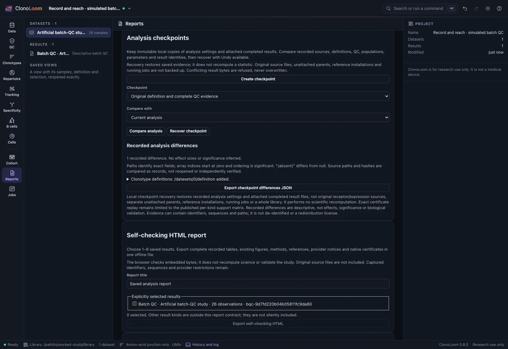
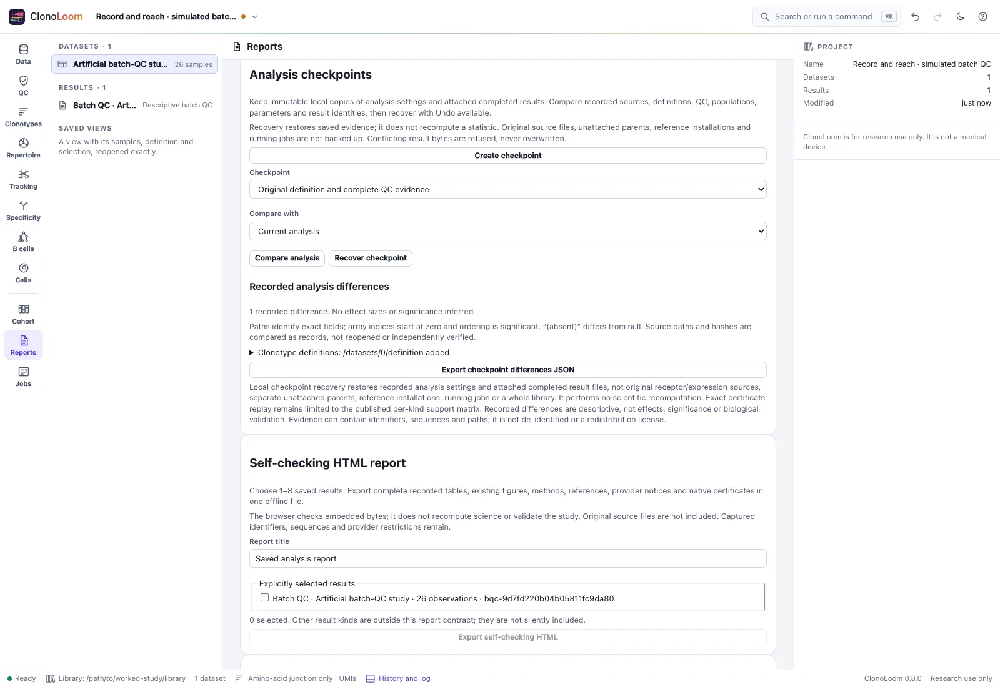

A complete record-and-reach study
Keep the same evidence across the window, clients and headless jobs. Know what was restored, what was recomputed and what remains a scientific judgment.
Start with a declared artificial study
ClonoLoom 0.8.0 connects the normal window, HTTP, MCP, Python and R with the same native workers. This worked study uses the 26-observation Batch quality-control study: four included batches have 8, 8, 3 and 5 subjects, with two explicitly excluded observations. Complete generating truth accompanies all 2,427 artificial rows.


Use threshold 3.5 and minimum five evaluable subjects. Each point is one sample; median lines are not confidence intervals. A shifted batch can have no within-batch flags. The existing Batch QC methods and limits explain the metric scales, denominators and modified-score convention.
Keep client evidence exact
Grant only edits,compute,files and run offline in an isolated library. Keep the normal window open for named proposal review. The worked fixture queries the same host through HTTP, MCP, Python and R, comparing the original native JSON strings byte for byte. Paging does not change the full-table frequency denominator. Transport agreement is separate from independent validation of a scientific method.
Use Python int/Decimal values or R exact number tokens, retaining original result text. Clients cannot approve their own proposals or enlarge the host’s grants. See Automation permissions and MCP connections.
Compare and recover a definition change
- Save a checkpoint with the original definition and completed batch-QC result.
- Review an amino-acid-only grouping change and compare the recorded analysis.
- Recover the checkpoint. The original query evidence returns without recomputing the saved statistic.


Separate integrity from replay
Export the selected result as a certificate and a self-checking HTML report. The report contains complete tables, existing figures, cited methods and provider notices. Its browser checks saved bytes. Native verify --replay recomputes captured evidence and requires exact outputs and scientific metadata; it does not redo upstream parsing, alignment or clonotyping.
clonoloom verify --integrity result.certificate.clz
clonoloom verify --replay result.certificate.clzA separately retained fingerprint can be supplied with --expect. Matching bytes are not an authenticity signature or validation of experimental assumptions.
Transfer and select one headless task
Explicitly include permitted sources in a portable archive, inspect its fingerprint and review import in a fresh library. The fixture verifies identical queries, checkpoint recovery and saved scientific files after removing the original source paths. Import can reopen dataset tables; saved analyses are not recomputed.
Prepare a pinned replay bundle and select one task with clonoloom run. The container guide adds explicit non-root execution, read-only input mounts, separate output/scratch and no network. Scheduler submission remains an operator action.
Read the support matrix
Exact replay and HTML reports cover batch QC, motifs and the three cohort kinds. Headless source computation covers batch QC and motifs. Other kinds remain unavailable; there is no approximate-success fallback. Checkpoints, archives and reports preserve evidence but do not de-identify it. Parquet and explicitly pseudonymized dataset tables are separate mapped exports, not rewritten replay certificates.
The complete worked guide contains commands, permissions, the boundary matrix and scientific references. The 0.8.0 compatibility fixture retains source truth, original evidence, checkpoint, report, certificate and archive. All earlier release fixtures remain unchanged.